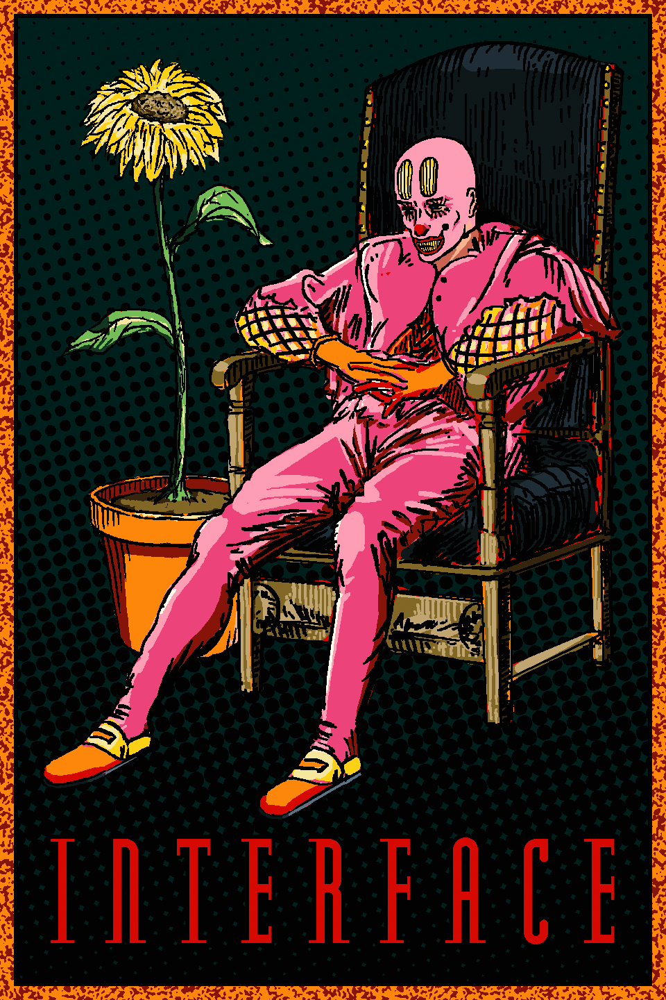

About Mischief
A human man named Percy found employment as a clown in the Dreamland amusement park. After a fire disaster, Percy joined the US Navy during WWII. In an attempt to utilize new technology on the ship Percy was stationed to invisible, the ship accidentally teleported to New York. Percy's shipmates were fused to the Hull during the incident, while Percy himself was completely destroyed - creating the transforming entity we know today as Mischief.
Mischief's Origins
Click the link to purchase this poster.
Mischief's Characteristics
- Is depicted as light pink clown head with an anthropod like torso
- Has bulbous light yellow ovals above his eyes
- Has a bright red spherical clown nose
- Has a bright red lipped wide smile with rectangular yellow teeth
- Is capable of modifying his body (Usually depicted by elongating his body to absurdly long lengths to appear dramatically stretched)
- Is capable of transforming his entire physical appearance into other objects/animals
Mischief's Friends
Mischief is very popular and has a lot of friends.